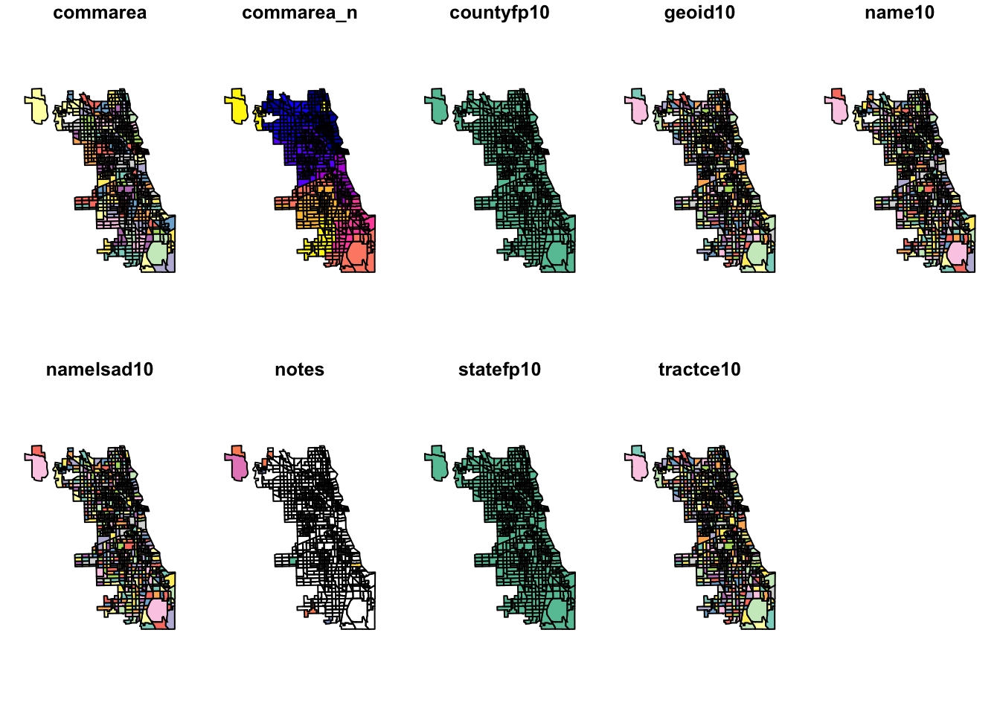
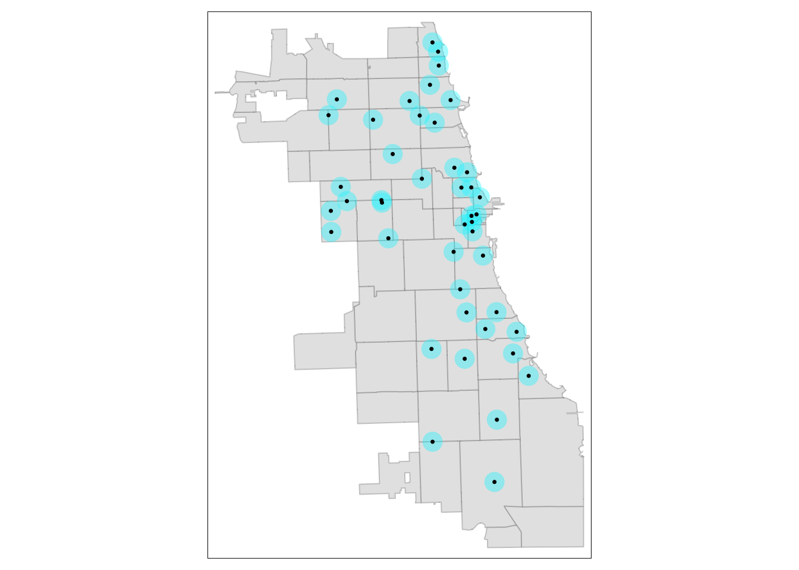
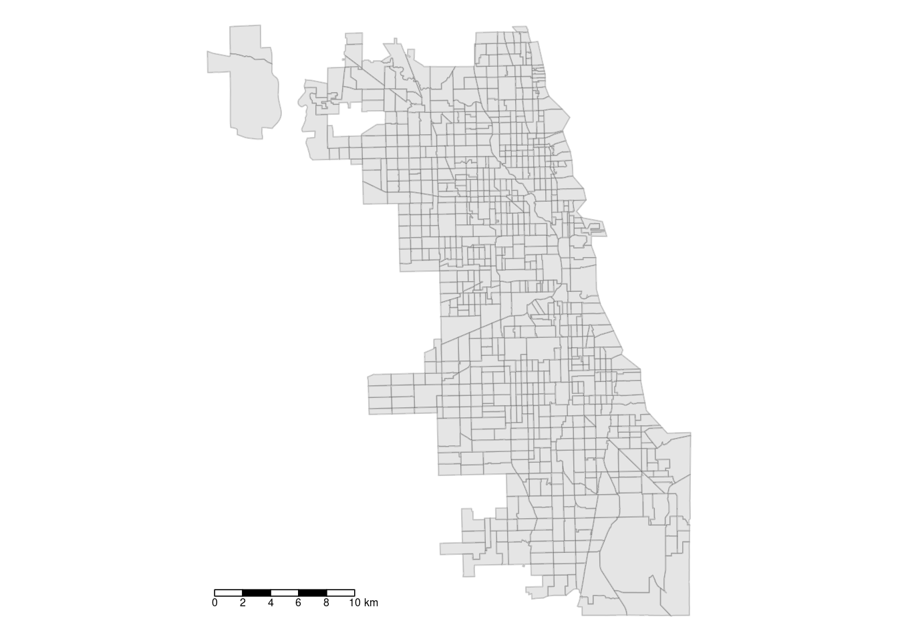
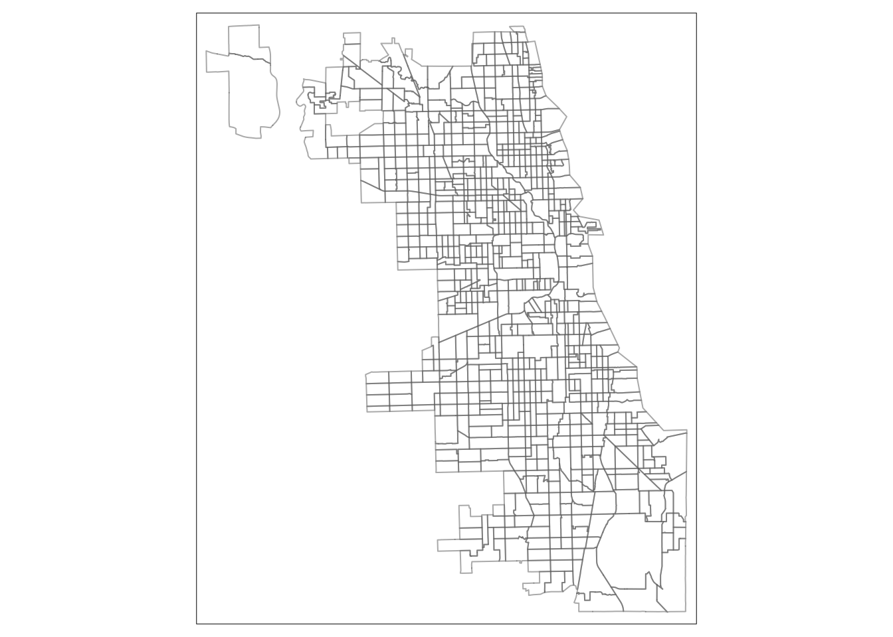
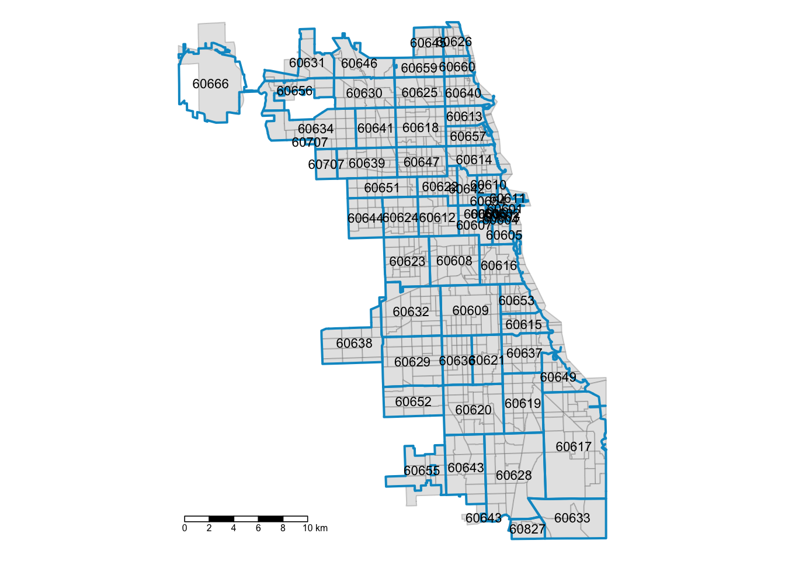
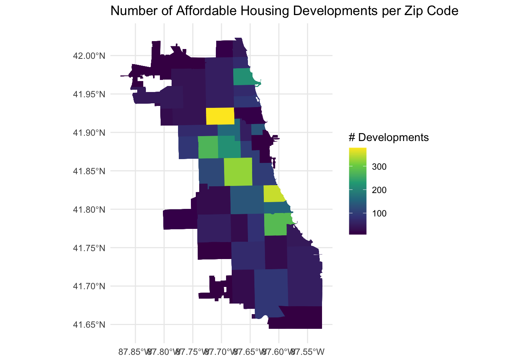
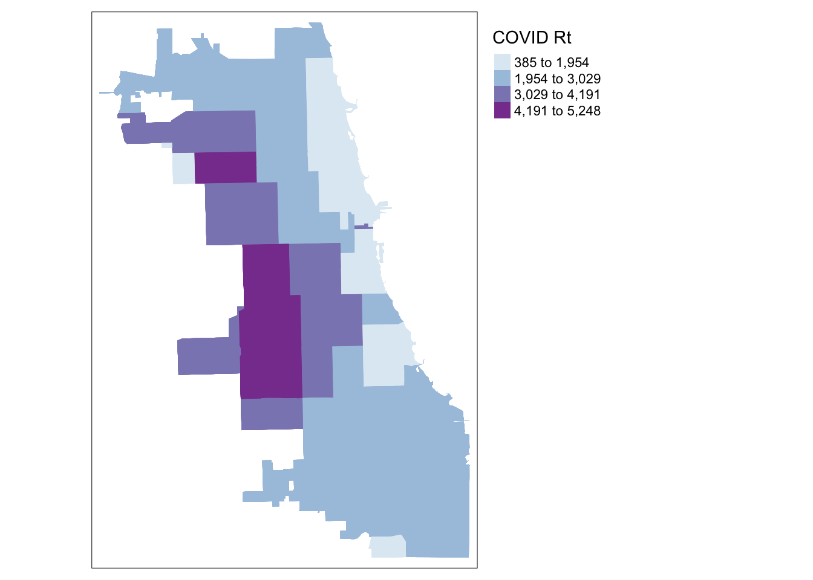

A Data Wrangling in R
Tools
For this module, you need:
- Your toolkit journal
- You may also want to generate a series of digital documents for final Project Requirements developed in this module. That may be a series of documents, spreadsheets, or templates identified across online resources.
Objectives
In this module, you will:
- Introduction to spatial data concepts and operations
- Convert CSV lat/long to spatial points and geocode address
- Overlay points with boundary data, merge SDOH data, visualize as choropleth
A.1 Intro to Spatial Data
Spatial data is essential for understanding the world around us, as it combines information with specific locations. This type of data is vital because it allows us to see how information changes with location. Without the geographical component, we’re left with just a list, not a map that can guide decisions or provide insights.
An important concept within spatial data is “simple features,” which is an international standard for how we represent real-world objects and their shapes on computers. This standard is the backbone of many Geographic Information Systems (GIS) technologies, making it easier for us to map and analyze spatial data. For example, in the R programming environment, spatial objects can be stored in a way that’s easy to work with, integrating seamlessly with other data analysis processes.
Understanding these aspects of spatial data is crucial, especially as we delve into more complex analyses. Whether it’s navigating through the components of a shapefile or exploring data in R, having a grasp on these concepts can help tackle the challenges that come with spatial data analysis.
A.2 Projections
The Earth is an irregular ellipsoid, rather than a perfect sphere. As a result, many ways of visualizing the Earth, in whole or in part, have been developed. A Coordinate Reference System (CRS) communicates what method should be used to flatten or project the Earth’s surface onto a 2-dimensional map. Different CRS imply different ways of projections and can generate substantially different visualizations. For example, the following are some world maps using different projections:
pic from slide 13 intro2spatialmed
In addition to projections that optimize for global accuracy, there are many regional projections. For instance, NAD83 (North American Datum 1983) is divided into several UTM (universal transverse mercator) zones across the continent. So when projecting a dataset of Illinois, for example, the most appropriate NAD83 projection would be NAD83 UTM zone 16N. Projection names have also been standardized to EPSG codes. The projection NAD83 UTM zone 16N is EPSG:26916.
Many datasets available online, and GeoJSON files as a general rule, default to the projection EPSG:4326, a global projection used by GPS. Changing projections can be critical for improving accuracy for your project, and making sure your layers are being displayed using the same information. Always search the internet to determine what projection is most appropriate for your project, and to find the corresponding EPSG code.
For this exercise we’ll use QGIS to change the projection of a spatial dataset.
A.3 Environmental Setup
Before starting operations related to spatial data, we need to complete an environmental setup. A basic understanding of R is assumed. This workshop requires several packages, which can be installed from CRAN:
For Mac users, check out https://github.com/r-spatial/sf for additional tips if you run into errors when installing the sf package. Using homebrew to install gdal usually fixes any remaining issues.
Now, loading the libraries:
<<<<<<< Updated upstreamlibrary(sf)
library(dplyr)## Linking to GEOS 3.11.0, GDAL 3.5.3, PROJ 9.1.0; sf_use_s2() is TRUE##
## Attaching package: 'dplyr'## The following objects are masked from 'package:stats':
##
## filter, lag## The following objects are masked from 'package:base':
##
## intersect, setdiff, setequal, unionA.4 Convert CSV Lat/Long to Points
Converting CSV latitude and longitude data to points in R is a straightforward yet powerful method for spatial analysis. This process involves using the sf package to transform geographic coordinates into spatial points, allowing for easy mapping and analysis. It’s an essential step for anyone working with geospatial data, enabling the visualization of locations and the application of geographic information systems (GIS) techniques. By assigning a Coordinate Reference System (CRS), these points become ready for spatial operations.
We are using the “Affordable_Rental_Housing_Developments.csv” in the dataset to show how to convert a csv Lat/Long data to points. First, we need to load the CSV data:
<<<<<<< Updated upstreamhousing = read.csv("o4rtestdata/Affordable_Rental_Housing_Developments.csv")Then, we need to ensure that no column (intended to be used as a coordinate) is entirely empty or filled with NA values:
cleaned_housing <- na.omit(housing)Finally, we start to convert it to points:
points_housing <- st_as_sf(cleaned_housing, coords = c("Longitude", "Latitude"), crs = 3435)If you want, you can view the resulting sf object:
print(points_housing)Then, we need to ensure that no column (intended to be used as a coordinate) is entirely empty or filled with NA values:
Finally, we start to convert it to points:
If you want, you can view the resulting sf object:
>>>>>>> Stashed changes## Simple feature collection with 487 features and 12 fields
## Geometry type: POINT
## Dimension: XY
## Bounding box: xmin: -87.80707 ymin: 41.64846 xmax: -87.54012 ymax: 42.01715
## Projected CRS: NAD83 / Illinois East (ftUS)
## First 10 features:
## Community.Area.Name Community.Area.Number
## 2 Rogers Park 1
## 3 Uptown 3
## 4 Edgewater 77
## 5 Roseland 49
## 6 Humboldt Park 23
## 7 Grand Boulevard 38
## 8 Woodlawn 42
## 9 Oakland 36
## 10 Oakland 36
## 11 Near North Side 8
## Property.Type
## 2 Senior
## 3 ARO
## 4 Senior
## 5 Supportive Housing
## 6 Multifamily
## 7 Multifamily
## 8 Multifamily
## 9 Multifamily
## 10 Senior
## 11 Supportive Housing
## Property.Name
## 2 Morse Senior Apts.
## 3 The Draper
## 4 Pomeroy Apts.
## 5 Wentworth Commons
## 6 Nelson Mandela Apts.
## 7 Legends South - Gwendolyn Place
## 8 Dorchester Apts.
## 9 Oakwood Shrs 1A, 1B, 2A, 2B1 (scattered sites)
## 10 Oakwood Shores Terrace
## 11 The Midwest/Carroll Park Apts.
## Address Zip.Code
## 2 6928 N. Wayne Ave. 60626
## 3 5050 N. Broadway 60640
## 4 5650 N. Kenmore Ave. 60660
## 5 11045 S. Wentworth Ave. 60628
## 6 607 N. Sawyer Ave. 60624
## 7 4333 S. Michigan Ave. 60653
## 8 1410 E. 62nd St. 60637
## 9 3859 S. Vincennes Ave. 60653
## 10 3755 S. Cottage Grove Ave. 60653
## 11 1333 N. Kingsbury St. 60622
## Phone.Number Management.Company
## 2 312-602-6207 Morse Urban Dev.
## 3 312-818-1722 Flats LLC
## 4 773-275-7820 Habitat Company
## 5 773-568-7804 Mercy Housing Lakefront
## 6 773-227-6332 Bickerdike Apts.
## 7 773-624-7676 Interstate Realty Management Co.
## 8 773-572-5500 The Thresholds
## 9 773-373-1300 The Community Builders
## 10 773-373-1300 The Community Builders, Inc.
## 11 312-337-5339 Holsten Real Estate Dev. Corp.
## Units X.Coordinate Y.Coordinate
## 2 44 1165844 1946059
## 3 35 1167357 1933882
## 4 198 1168181 1937918
## 5 50 1176951 1831516
## 6 6 1154640 1903912
## 7 71 1177924 1876178
## 8 67 1186722 1864210
## 9 534 1180730 1879251
## 10 148 1181956 1880135
## 11 40 1170359 1908980
## Location
## 2 (42.0075737709331, -87.6651711448293)
## 3 (41.9741295261027, -87.6599553011627)
## 4 (41.9851867755403, -87.656808676983)
## 5 (41.6930159120977, -87.6277673462214)
## 6 (41.8921534052465, -87.7075265659001)
## 7 (41.815550396096, -87.6228565224104)
## 8 (41.782505219358, -87.5909616432556)
## 9 (41.8239192006736, -87.6124684434156)
## 10 (41.8263173139507, -87.6079454471381)
## 11 (41.9057310022859, -87.6496459663701)
## geometry
## 2 POINT (-87.66517 42.00757)
## 3 POINT (-87.65996 41.97413)
## 4 POINT (-87.65681 41.98519)
## 5 POINT (-87.62777 41.69302)
## 6 POINT (-87.70753 41.89215)
## 7 POINT (-87.62286 41.81555)
## 8 POINT (-87.59096 41.78251)
## 9 POINT (-87.61247 41.82392)
## 10 POINT (-87.60795 41.82632)
## 11 POINT (-87.64965 41.90573)A.5 Prepare Spatial Data
In this section, we will go through the basic environment setup and spatial data preparation for the further operations and analysis.
A.5.1 Load Spatial Data
We need to load the spatial data (shapefile). All the data used for this one assignment can be found here here. Remember, this type of data is actually comprised of multiple files. All need to be present in order to read correctly.
<<<<<<< Updated upstreamChi_tracts = st_read("o4rtestdata/geo_export_aae47441-adab-4aca-8cb0-2e0c0114096e.shp")## Reading layer `geo_export_aae47441-adab-4aca-8cb0-2e0c0114096e' from data source `/Users/maryniakolak/Code/sdhoplace-toolkit/o4rtestdata/geo_export_aae47441-adab-4aca-8cb0-2e0c0114096e.shp'
=======
## Reading layer `geo_export_aae47441-adab-4aca-8cb0-2e0c0114096e' from data source `/Users/yilinlyu/Documents/sdohplace-toolkit/o4rtestdata/geo_export_aae47441-adab-4aca-8cb0-2e0c0114096e.shp'
>>>>>>> Stashed changes
## using driver `ESRI Shapefile'
## Simple feature collection with 801 features and 9 fields
## Geometry type: POLYGON
## Dimension: XY
## Bounding box: xmin: -87.94025 ymin: 41.64429 xmax: -87.52366 ymax: 42.02392
## Geodetic CRS: WGS84(DD)
Always inspect data when loading in. First we look at a non-spatial view.
<<<<<<< Updated upstream
head(Chi_tracts)
=======
>>>>>>> Stashed changes
## Simple feature collection with 6 features and 9 fields
## Geometry type: POLYGON
## Dimension: XY
## Bounding box: xmin: -87.68822 ymin: 41.72902 xmax: -87.62394 ymax: 41.87455
## Geodetic CRS: WGS84(DD)
## commarea commarea_n countyfp10 geoid10
## 1 44 44 031 17031842400
## 2 59 59 031 17031840300
## 3 34 34 031 17031841100
## 4 31 31 031 17031841200
## 5 32 32 031 17031839000
## 6 28 28 031 17031838200
## name10 namelsad10 notes statefp10
## 1 8424 Census Tract 8424 <NA> 17
## 2 8403 Census Tract 8403 <NA> 17
## 3 8411 Census Tract 8411 <NA> 17
## 4 8412 Census Tract 8412 <NA> 17
## 5 8390 Census Tract 8390 <NA> 17
## 6 8382 Census Tract 8382 <NA> 17
## tractce10 geometry
## 1 842400 POLYGON ((-87.62405 41.7302...
## 2 840300 POLYGON ((-87.68608 41.8229...
## 3 841100 POLYGON ((-87.62935 41.8528...
## 4 841200 POLYGON ((-87.68813 41.8556...
## 5 839000 POLYGON ((-87.63312 41.8744...
## 6 838200 POLYGON ((-87.66782 41.8741...
Note the last column – this is a spatially enabled column. The data is no longer a ‘shapefile’ but an `sf’ object, comprised of polygons.
We can use a baseR function to view the spatial dimension. The sf framework enables previews of each attribute in our spatial file.
<<<<<<< Updated upstream
plot(Chi_tracts)

Check out the data structure of this file.
str(Chi_tracts)
=======
Check out the data structure of this file.
>>>>>>> Stashed changes
## Classes 'sf' and 'data.frame': 801 obs. of 10 variables:
## $ commarea : chr "44" "59" "34" "31" ...
## $ commarea_n: num 44 59 34 31 32 28 65 53 76 77 ...
## $ countyfp10: chr "031" "031" "031" "031" ...
## $ geoid10 : chr "17031842400" "17031840300" "17031841100" "17031841200" ...
## $ name10 : chr "8424" "8403" "8411" "8412" ...
## $ namelsad10: chr "Census Tract 8424" "Census Tract 8403" "Census Tract 8411" "Census Tract 8412" ...
## $ notes : chr NA NA NA NA ...
## $ statefp10 : chr "17" "17" "17" "17" ...
## $ tractce10 : chr "842400" "840300" "841100" "841200" ...
## $ geometry :sfc_POLYGON of length 801; first list element: List of 1
## ..$ : num [1:243, 1:2] -87.6 -87.6 -87.6 -87.6 -87.6 ...
## ..- attr(*, "class")= chr [1:3] "XY" "POLYGON" "sfg"
## - attr(*, "sf_column")= chr "geometry"
## - attr(*, "agr")= Factor w/ 3 levels "constant","aggregate",..: NA NA NA NA NA NA NA NA NA
## ..- attr(*, "names")= chr [1:9] "commarea" "commarea_n" "countyfp10" "geoid10" ...
A.5.2 Change Projections/CRS
A Coordinate Reference System (CRS) is crucial for mapping the Earth’s three-dimensional surface onto a flat, two-dimensional map. It defines how to project the Earth’s surface, which is vital because different CRSs can make the same location appear differently on maps. This means choosing the right CRS is essential for accurate spatial analysis and mapping. In practice, especially when using software like R, it’s important to check and adjust the CRS of your data to ensure consistency across your project. This helps in avoiding misinterpretations and errors in your spatial analysis.
First, check out the coordinate reference system.
<<<<<<< Updated upstreamst_crs(Chi_tracts)## Coordinate Reference System:
## User input: WGS84(DD)
## wkt:
## GEOGCRS["WGS84(DD)",
## DATUM["WGS84",
## ELLIPSOID["WGS84",6378137,298.257223563,
## LENGTHUNIT["metre",1,
## ID["EPSG",9001]]]],
## PRIMEM["Greenwich",0,
## ANGLEUNIT["degree",0.0174532925199433]],
## CS[ellipsoidal,2],
## AXIS["geodetic longitude",east,
## ORDER[1],
## ANGLEUNIT["degree",0.0174532925199433]],
## AXIS["geodetic latitude",north,
## ORDER[2],
## ANGLEUNIT["degree",0.0174532925199433]]]To transform our CRS, we use the st_transform function. Let’s choose a projection that is focused on Illinois, and uses distance as feet or meters, to make it a bit more accessible for our work. EPSG:3435 is a good fit:
Chi_tracts.3435 <- st_transform(Chi_tracts, "EPSG:3435")
# Chi_tracts.3435 <- st_transform(Chi_tracts, 3435)
st_crs(Chi_tracts.3435)Chi_tracts.3435 <- st_transform(Chi_tracts, "EPSG:3435")
# Chi_tracts.3435 <- st_transform(Chi_tracts, 3435)
st_crs(Chi_tracts.3435)## Coordinate Reference System:
## User input: EPSG:3435
## wkt:
## PROJCRS["NAD83 / Illinois East (ftUS)",
## BASEGEOGCRS["NAD83",
## DATUM["North American Datum 1983",
## ELLIPSOID["GRS 1980",6378137,298.257222101,
## LENGTHUNIT["metre",1]]],
## PRIMEM["Greenwich",0,
## ANGLEUNIT["degree",0.0174532925199433]],
## ID["EPSG",4269]],
## CONVERSION["SPCS83 Illinois East zone (US Survey feet)",
## METHOD["Transverse Mercator",
## ID["EPSG",9807]],
## PARAMETER["Latitude of natural origin",36.6666666666667,
## ANGLEUNIT["degree",0.0174532925199433],
## ID["EPSG",8801]],
## PARAMETER["Longitude of natural origin",-88.3333333333333,
## ANGLEUNIT["degree",0.0174532925199433],
## ID["EPSG",8802]],
## PARAMETER["Scale factor at natural origin",0.999975,
## SCALEUNIT["unity",1],
## ID["EPSG",8805]],
## PARAMETER["False easting",984250,
## LENGTHUNIT["US survey foot",0.304800609601219],
## ID["EPSG",8806]],
## PARAMETER["False northing",0,
## LENGTHUNIT["US survey foot",0.304800609601219],
## ID["EPSG",8807]]],
## CS[Cartesian,2],
## AXIS["easting (X)",east,
## ORDER[1],
## LENGTHUNIT["US survey foot",0.304800609601219]],
## AXIS["northing (Y)",north,
## ORDER[2],
## LENGTHUNIT["US survey foot",0.304800609601219]],
## USAGE[
## SCOPE["Engineering survey, topographic mapping."],
## AREA["United States (USA) - Illinois - counties of Boone; Champaign; Clark; Clay; Coles; Cook; Crawford; Cumberland; De Kalb; De Witt; Douglas; Du Page; Edgar; Edwards; Effingham; Fayette; Ford; Franklin; Gallatin; Grundy; Hamilton; Hardin; Iroquois; Jasper; Jefferson; Johnson; Kane; Kankakee; Kendall; La Salle; Lake; Lawrence; Livingston; Macon; Marion; Massac; McHenry; McLean; Moultrie; Piatt; Pope; Richland; Saline; Shelby; Vermilion; Wabash; Wayne; White; Will; Williamson."],
## BBOX[37.06,-89.28,42.5,-87.02]],
## ID["EPSG",3435]]plot(st_geometry(Chi_tracts.3435), border = "gray", lwd = 2, main = "NAD83 / Illinois East (ftUS)", sub="topo mapping & survey use")
=======plot(st_geometry(Chi_tracts.3435), border = "gray", lwd = 2, main = "NAD83 / Illinois East (ftUS)", sub="topo mapping & survey use")
>>>>>>> Stashed changesA.5.3 Refine Basic Map
Now we’ll switch to a more extensive cartographic mapping package, tmap. We approach mapping with one layer at a time. Always start with the object you want to map by calling it with the tm_shape function. Then, at least one descriptive/styling function follows. There are hundreds of variations and paramater specifications, so take your time in exploring tmap and the options.
Here we style the tracts with some semi-transparent borders.
<<<<<<< Updated upstreamlibrary(tmap)
tm_shape(Chi_tracts) + tm_borders(alpha=0.5) ## Breaking News: tmap 3.x is retiring. Please test v4, e.g. with
## remotes::install_github('r-tmap/tmap')Next we fill the tracts with a light gray, and adjust the color and transparency of borders. We also add a scale bar, positioning it to the left and having a thickness of 0.8 units, and turn off the frame.
tm_shape(Chi_tracts) + tm_fill(col = "gray90") + tm_borders(alpha=0.2, col = "gray10") +
tm_scale_bar(position = ("left"), lwd = 0.8) +
tm_layout(frame = F)
Next we fill the tracts with a light gray, and adjust the color and transparency of borders. We also add a scale bar, positioning it to the left and having a thickness of 0.8 units, and turn off the frame.
tm_shape(Chi_tracts) + tm_fill(col = "gray90") + tm_borders(alpha=0.2, col = "gray10") +
tm_scale_bar(position = ("left"), lwd = 0.8) +
tm_layout(frame = F)
Check out https://rdrr.io/cran/tmap/man/tm_polygons.html for more ideas!
A.5.4 Overlay Zip Code Boundaries
How do census tract areas correspond to zip codes? While tracts better represent neighborhoods, often times we are stuck with zip code level scale in healh research. Here we’ll make a reference map to highlight tract distribution across each zip code.
First, we read in zip code boundaries. This data was downloaded directly from the City of Chicago Data Portal as a shapefile.
<<<<<<< Updated upstreamChi_Zips = st_read("o4rtestdata/geo_export_54bc15d8-5ef5-40e4-8f72-bb0c6dbac9a5.shp")## Reading layer `geo_export_54bc15d8-5ef5-40e4-8f72-bb0c6dbac9a5' from data source `/Users/maryniakolak/Code/sdhoplace-toolkit/o4rtestdata/geo_export_54bc15d8-5ef5-40e4-8f72-bb0c6dbac9a5.shp'
=======
## Reading layer `geo_export_54bc15d8-5ef5-40e4-8f72-bb0c6dbac9a5' from data source `/Users/yilinlyu/Documents/sdohplace-toolkit/o4rtestdata/geo_export_54bc15d8-5ef5-40e4-8f72-bb0c6dbac9a5.shp'
>>>>>>> Stashed changes
## using driver `ESRI Shapefile'
## Simple feature collection with 61 features and 4 fields
## Geometry type: MULTIPOLYGON
## Dimension: XY
## Bounding box: xmin: -87.94011 ymin: 41.64454 xmax: -87.52414 ymax: 42.02304
## Geodetic CRS: WGS84(DD)
Next, we layer the new shape in – on top of the tracts. We use a thicker border, and try out a new color. Experiment!
<<<<<<< Updated upstream
## FIRST LAYER: CENSUS TRACT BOUNADRIES
tm_shape(Chi_tracts.3435) + tm_fill(col = "gray90") +
tm_borders(alpha=0.2, col = "gray10") +
## SECOND LAYER: ZIP CODE BOUNDARIES WITH LABEL
tm_shape(Chi_Zips) + tm_borders(lwd = 2, col = "#0099CC") +
tm_text("zip", size = 0.7) +
## MORE CARTOGRAPHIC STYLE
tm_scale_bar(position = ("left"), lwd = 0.8) +
tm_layout(frame = F)

=======
## FIRST LAYER: CENSUS TRACT BOUNADRIES
tm_shape(Chi_tracts.3435) + tm_fill(col = "gray90") +
tm_borders(alpha=0.2, col = "gray10") +
## SECOND LAYER: ZIP CODE BOUNDARIES WITH LABEL
tm_shape(Chi_Zips) + tm_borders(lwd = 2, col = "#0099CC") +
tm_text("zip", size = 0.7) +
## MORE CARTOGRAPHIC STYLE
tm_scale_bar(position = ("left"), lwd = 0.8) +
tm_layout(frame = F)

>>>>>>> Stashed changes
A.6 Geocode Addresses to Points
A.6.1 Prepare Address Data
If you start with only addresses, you’ll need to geocode. Our methadone maintenance provider dataset is only available as such. Addresses are comprised of characeters that reference a specific place. We will use the network topology service of a Geocoder to translate that address to a coordinate in some CRS.
First we load the tidygeocoder to get our geocoding done. Note, this uses the interent to process, so is not suitable for HIPPA protected data like individual, living person addresses. For offline geocoders, check out Pelias or ESRI.
library(tidygeocoder)Let’s read in and inspect data for methadone maintenance providers. Note, these addresses were made available by SAMSHA, and are known as publicly available information. An additional analysis could call each service to check on access to medication during COVID in Septmber 2020, and the list would be updated further.
methadoneClinics <- read.csv("o4rtestdata/chicago_methadone_nogeometry.csv")
head(methadoneClinics)## X
## 1 1
## 2 2
## 3 3
## 4 4
## 5 5
## 6 6
## Name
## 1 Chicago Treatment and Counseling Center, Inc.
## 2 Sundace Methadone Treatment Center, LLC
## 3 Soft Landing Interventions/DBA Symetria Recovery of Lakeview
## 4 PDSSC - Chicago, Inc.
## 5 Center for Addictive Problems, Inc.
## 6 Family Guidance Centers, Inc.
=======
Let’s read in and inspect data for methadone maintenance providers. Note, these addresses were made available by SAMSHA, and are known as publicly available information. An additional analysis could call each service to check on access to medication during COVID in Septmber 2020, and the list would be updated further.
## X Name
## 1 1 Chicago Treatment and Counseling Center, Inc.
## 2 2 Sundace Methadone Treatment Center, LLC
## 3 3 Soft Landing Interventions/DBA Symetria Recovery of Lakeview
## 4 4 PDSSC - Chicago, Inc.
## 5 5 Center for Addictive Problems, Inc.
## 6 6 Family Guidance Centers, Inc.
>>>>>>> Stashed changes
## Address City State Zip
## 1 4453 North Broadway st. Chicago IL 60640
## 2 4545 North Broadway St. Chicago IL 60640
## 3 3934 N. Lincoln Ave. Chicago IL 60613
## 4 2260 N. Elston Ave. Chicago IL 60614
## 5 609 N. Wells St. Chicago IL 60654
## 6 310 W. Chicago Ave. Chicago IL 60654
Let’s geocode one address first, just to make sure our system is working. We’ll use the “cascade” method which use the US Census and OpenStreetMap geocoders. These two services are the main options with tidygeocoder.
<<<<<<< Updated upstream
sample <- geo("2260 N. Elston Ave. Chicago, IL", lat = latitude, long = longitude, method = 'cascade')
## Passing 1 address to the US Census single address geocoder
## Query completed in: 2.6 seconds
head(sample)
=======
sample <- geo("2260 N. Elston Ave. Chicago, IL", lat = latitude, long = longitude, method = 'cascade')
## Warning: The `method` argument of `geo()` cannot be "cascade" as of tidygeocoder 1.0.4.
## ℹ Please use `geocode_combine()` instead.
## This warning is displayed once every 8 hours.
## Call `lifecycle::last_lifecycle_warnings()` to see where this warning was
## generated.
## Passing 1 address to the US Census single address geocoder
## Query completed in: 0.7 seconds
>>>>>>> Stashed changes
## # A tibble: 1 × 4
## address latitude longitude geo_method
## <chr> <dbl> <dbl> <chr>
## 1 2260 N. Elston A… 41.9 -87.7 census
As we prepare for geocoding, check out the structure of the dataset. The data should be a character to be read properly.
<<<<<<< Updated upstream
str(methadoneClinics)
=======
>>>>>>> Stashed changes
## 'data.frame': 27 obs. of 6 variables:
## $ X : int 1 2 3 4 5 6 7 8 9 10 ...
## $ Name : chr "Chicago Treatment and Counseling Center, Inc." "Sundace Methadone Treatment Center, LLC" "Soft Landing Interventions/DBA Symetria Recovery of Lakeview" "PDSSC - Chicago, Inc." ...
## $ Address: chr "4453 North Broadway st." "4545 North Broadway St." "3934 N. Lincoln Ave." "2260 N. Elston Ave." ...
## $ City : chr "Chicago" "Chicago" "Chicago" "Chicago" ...
## $ State : chr "IL" "IL" "IL" "IL" ...
## $ Zip : int 60640 60640 60613 60614 60654 60654 60651 60607 60607 60616 ...
We need to clean the data a bit. We’ll add a new column for a full address, as required by the geocoding service. When you use a geocoding service, be sure to read the documentation and understand how the data needs to be formatted for input.
<<<<<<< Updated upstream
methadoneClinics$fullAdd <- paste(as.character(methadoneClinics$Address),
as.character(methadoneClinics$City),
as.character(methadoneClinics$State),
as.character(methadoneClinics$Zip))
We’re ready to go! Batch geocode with one function, and inspect:
geoCodedClinics <- geocode(methadoneClinics,
address = 'fullAdd', lat = latitude, long = longitude, method = 'cascade')
## Passing 27 addresses to the US Census batch geocoder
## Query completed in: 0.6 seconds
head(geoCodedClinics)
=======
methadoneClinics$fullAdd <- paste(as.character(methadoneClinics$Address),
as.character(methadoneClinics$City),
as.character(methadoneClinics$State),
as.character(methadoneClinics$Zip))
We’re ready to go! Batch geocode with one function, and inspect:
geoCodedClinics <- geocode(methadoneClinics,
address = 'fullAdd', lat = latitude, long = longitude, method = 'cascade')
## Passing 27 addresses to the US Census batch geocoder
## Query completed in: 0.6 seconds
>>>>>>> Stashed changes
## # A tibble: 6 × 10
## X Name Address City State Zip fullAdd
## <int> <chr> <chr> <chr> <chr> <int> <chr>
## 1 1 Chicag… 4453 N… Chic… IL 60640 4453 N…
## 2 2 Sundac… 4545 N… Chic… IL 60640 4545 N…
## 3 3 Soft L… 3934 N… Chic… IL 60613 3934 N…
## 4 4 PDSSC … 2260 N… Chic… IL 60614 2260 N…
## 5 5 Center… 609 N.… Chic… IL 60654 609 N.…
## 6 6 Family… 310 W.… Chic… IL 60654 310 W.…
## # ℹ 3 more variables: latitude <dbl>,
## # longitude <dbl>, geo_method <chr>
There were two that didn’t geocode correctly. You can inspect further. This could involve a quick check for spelling issues; or, searching the address and pulling the lat/long using Google Maps and inputting manually. Or, if we are concerned it’s a human or unknown error, we could omit. For this exercise we’ll just omit the two clinics that didn’t geocode correctly.
<<<<<<< Updated upstream
geoCodedClinics2 <- na.omit(geoCodedClinics)
=======
>>>>>>> Stashed changes
A.6.2 Convert to Spatial Data
This is not spatial data yet! To convert a static file to spatial data, we use the powerful st_as_sf function from sf. Indicate the x,y parameters (=longitude, latitude) and the coordinate reference system used. Our geocoding service used the standard EPSG:4326, so we input that here.
library(sf)
methadoneSf <- st_as_sf(geoCodedClinics2,
coords = c( "longitude", "latitude"),
crs = 4326)A.6.3 Basic Map of Points
For a really simple map of points – to ensure they were geocoded and converted to spatial data correctly, we use tmap. We’ll use the interactive version to view.
library(tmap)
tmap_mode("view")
tm_shape(methadoneSf) + tm_dots() If your points didn’t plot correctly:
- Did you flip the longitude/latitude values?
- Did you input the correct CRS?
Those two issues are the most common errors.
A.6.4 Overlay Points & Style
Let’s add our zip code map from the previous module. First load the data, then overlay.
<<<<<<< Updated upstreamChi_Zipsf <- st_read("o4rtestdata/ChiZipMaster1.geojson")## Reading layer `ChiZipMaster1' from data source
## `/Users/yilinlyu/Documents/sdohplace-toolkit/o4rtestdata/ChiZipMaster1.geojson'
## using driver `GeoJSON'
## Simple feature collection with 540 features and 31 fields
## Geometry type: MULTIPOLYGON
## Dimension: XY
## Bounding box: xmin: -87.87596 ymin: 41.64454 xmax: -87.52414 ymax: 42.02304
## Geodetic CRS: WGS 84With this overlay, we’ll add a “hack” to include the methadone clinic points in a legend.
<<<<<<< Updated upstreamtmap_mode("plot")## tmap mode set to plotting## 1st layer (gets plotted first)
tm_shape(Chi_Zipsf) + tm_fill("Case.Rate...Cumulative",
style="jenks", pal="BuPu", n=4, title = "COVID Rt") +
## 2nd layer (overlay)
tm_shape(methadoneSf) + tm_dots(size = 0.2, col = "gray20") +
## "Hack" a manual symbology for dots in the legend
tm_add_legend("symbol", col = "gray20", size = .2, labels = "Methadone MOUD") +
## Cartographic Styling
tm_layout(legend.outside = TRUE, legend.outside.position = "right")
## tmap mode set to plotting## 1st layer (gets plotted first)
tm_shape(Chi_Zipsf) + tm_fill("Case.Rate...Cumulative",
style="jenks", pal="BuPu", n=4, title = "COVID Rt") +
## 2nd layer (overlay)
tm_shape(methadoneSf) + tm_dots(size = 0.2, col = "gray20") +
## "Hack" a manual symbology for dots in the legend
tm_add_legend("symbol", col = "gray20", size = .2, labels = "Methadone MOUD") +
## Cartographic Styling
tm_layout(legend.outside = TRUE, legend.outside.position = "right")
A.7 Merge SDOH Data to Boundary Dataset
From here, we can integrate more data. Let’s try a different point dataset – Affordable Rental Housing Developments, as made available by the City of Chicago Data Portal. This could be interesting for a number of different reasons – maybe we hypothesize better outcomes are associated with better access to affordable housing options? Or, we hypothesize the opposite, that mean distance to more population dense housing locations is vulnerable to airborne disease?
For this example, we’ll think about this dataset as access to secure and affordable housing. Persons with lower incomes residing in places with fewer developments may be more vulnerable to housing insecurity -> impacts health.
<<<<<<< Updated upstreamAffHousing <- read.csv("o4rtestdata/Affordable_Rental_Housing_Developments.csv")
head(AffHousing)## Community.Area.Name Community.Area.Number
## 1 Englewood 68
## 2 Rogers Park 1
## 3 Uptown 3
## 4 Edgewater 77
## 5 Roseland 49
## 6 Humboldt Park 23
## Property.Type Property.Name
## 1 Veterans Hope Manor Village
## 2 Senior Morse Senior Apts.
## 3 ARO The Draper
## 4 Senior Pomeroy Apts.
## 5 Supportive Housing Wentworth Commons
## 6 Multifamily Nelson Mandela Apts.
## Address Zip.Code
## 1 5900-6100 S. Green/Peoria/Sangamon 60621
## 2 6928 N. Wayne Ave. 60626
## 3 5050 N. Broadway 60640
## 4 5650 N. Kenmore Ave. 60660
## 5 11045 S. Wentworth Ave. 60628
## 6 607 N. Sawyer Ave. 60624
## Phone.Number Management.Company
## 1 312-564-2393 Volunteers of America Illinois
## 2 312-602-6207 Morse Urban Dev.
## 3 312-818-1722 Flats LLC
## 4 773-275-7820 Habitat Company
## 5 773-568-7804 Mercy Housing Lakefront
## 6 773-227-6332 Bickerdike Apts.
## Units X.Coordinate Y.Coordinate Latitude
## 1 36 NA NA NA
## 2 44 1165844 1946059 42.00757
## 3 35 1167357 1933882 41.97413
## 4 198 1168181 1937918 41.98519
## 5 50 1176951 1831516 41.69302
## 6 6 1154640 1903912 41.89215
## Longitude
## 1 NA
## 2 -87.66517
## 3 -87.65996
## 4 -87.65681
## 5 -87.62777
## 6 -87.70753
## Location
## 1
## 2 (42.0075737709331, -87.6651711448293)
## 3 (41.9741295261027, -87.6599553011627)
## 4 (41.9851867755403, -87.656808676983)
## 5 (41.6930159120977, -87.6277673462214)
## 6 (41.8921534052465, -87.7075265659001)There were a few data points with odd inputs and null values. Remember, we can’t convert any null values to spatial coordinates. Again, in an ideal context, you would explore and understand what is happening, systematically. In our experiment, we’ll omit nulls.
AffHousing <- na.omit(AffHousing)Look at the structure of the object.
str(AffHousing)## Community.Area.Name Community.Area.Number Property.Type
## 1 Englewood 68 Veterans
## 2 Rogers Park 1 Senior
## 3 Uptown 3 ARO
## 4 Edgewater 77 Senior
## 5 Roseland 49 Supportive Housing
## 6 Humboldt Park 23 Multifamily
## Property.Name Address Zip.Code Phone.Number
## 1 Hope Manor Village 5900-6100 S. Green/Peoria/Sangamon 60621 312-564-2393
## 2 Morse Senior Apts. 6928 N. Wayne Ave. 60626 312-602-6207
## 3 The Draper 5050 N. Broadway 60640 312-818-1722
## 4 Pomeroy Apts. 5650 N. Kenmore Ave. 60660 773-275-7820
## 5 Wentworth Commons 11045 S. Wentworth Ave. 60628 773-568-7804
## 6 Nelson Mandela Apts. 607 N. Sawyer Ave. 60624 773-227-6332
## Management.Company Units X.Coordinate Y.Coordinate Latitude
## 1 Volunteers of America Illinois 36 NA NA NA
## 2 Morse Urban Dev. 44 1165844 1946059 42.00757
## 3 Flats LLC 35 1167357 1933882 41.97413
## 4 Habitat Company 198 1168181 1937918 41.98519
## 5 Mercy Housing Lakefront 50 1176951 1831516 41.69302
## 6 Bickerdike Apts. 6 1154640 1903912 41.89215
## Longitude Location
## 1 NA
## 2 -87.66517 (42.0075737709331, -87.6651711448293)
## 3 -87.65996 (41.9741295261027, -87.6599553011627)
## 4 -87.65681 (41.9851867755403, -87.656808676983)
## 5 -87.62777 (41.6930159120977, -87.6277673462214)
## 6 -87.70753 (41.8921534052465, -87.7075265659001)There were a few data points with odd inputs and null values. Remember, we can’t convert any null values to spatial coordinates. Again, in an ideal context, you would explore and understand what is happening, systematically. In our experiment, we’ll omit nulls.
Look at the structure of the object.
>>>>>>> Stashed changes## 'data.frame': 487 obs. of 14 variables:
## $ Community.Area.Name : chr "Rogers Park" "Uptown" "Edgewater" "Roseland" ...
## $ Community.Area.Number: int 1 3 77 49 23 38 42 36 36 8 ...
## $ Property.Type : chr "Senior" "ARO" "Senior" "Supportive Housing" ...
## $ Property.Name : chr "Morse Senior Apts." "The Draper" "Pomeroy Apts." "Wentworth Commons" ...
## $ Address : chr "6928 N. Wayne Ave." "5050 N. Broadway" "5650 N. Kenmore Ave." "11045 S. Wentworth Ave." ...
## $ Zip.Code : int 60626 60640 60660 60628 60624 60653 60637 60653 60653 60622 ...
## $ Phone.Number : chr "312-602-6207" "312-818-1722" "773-275-7820" "773-568-7804" ...
## $ Management.Company : chr "Morse Urban Dev." "Flats LLC" "Habitat Company" "Mercy Housing Lakefront" ...
## $ Units : int 44 35 198 50 6 71 67 534 148 40 ...
## $ X.Coordinate : num 1165844 1167357 1168181 1176951 1154640 ...
## $ Y.Coordinate : num 1946059 1933882 1937918 1831516 1903912 ...
## $ Latitude : num 42 42 42 41.7 41.9 ...
## $ Longitude : num -87.7 -87.7 -87.7 -87.6 -87.7 ...
## $ Location : chr "(42.0075737709331, -87.6651711448293)" "(41.9741295261027, -87.6599553011627)" "(41.9851867755403, -87.656808676983)" "(41.6930159120977, -87.6277673462214)" ...
## - attr(*, "na.action")= 'omit' Named int 1
## ..- attr(*, "names")= chr "1"In this dataset, we can see coordinate information is already included – twice! You’re looking at 2 different types of coordinate systems. We’ll use “Longitude” and “Latitude” to represent X,Y and an ESPG of 4326. We’re guessing, and hopeful.
<<<<<<< Updated upstreamAffHousingSf <- st_as_sf(AffHousing,
coords = c("Longitude", "Latitude"),
crs = 4326)We can now map the data for a quick view – does this look like Chicago, hopefully?
tm_shape(AffHousingSf) + tm_bubbles("Units", col = "purple", style = "sd") 
=======We can now map the data for a quick view – does this look like Chicago, hopefully?
>>>>>>> Stashed changesA.8 Graduated Symbology & Choropleth Map
Previously we mapped points as dots. We literally used the tm_dots() function to do so. Another option is changing the size of the point, according to some attribute of the data. In this dataset, we see an attribute field that gives us the total number of units per housing site. Let’s use a graduated symbology, with the tm_bubbles() function, to map these points. That way points with more units will be bigger, and not all places are weighted the same visually.
tm_shape(Chi_Zipsf) + tm_polygons(col = "gray80") +
tm_shape(AffHousingSf) + tm_bubbles("Units", col = "purple") tm_shape(Chi_Zipsf) + tm_polygons(col = "gray80") +
tm_shape(AffHousingSf) + tm_bubbles("Units", col = "purple") Let’s map everything at once, and explore which zip codes are the most vulnerable to persons with OUD during the pandemic in September 2020, based on the information we have here?
## Zip Codes with Labels
tm_shape(Chi_Zipsf) + tm_fill("Case.Rate...Cumulative",
style="jenks", pal="BuPu", n=4, title = "COVID Rt") +
## Affordable Housing Units
tm_shape(AffHousingSf) + tm_bubbles("Units") +
## Methadone MOUD
tm_shape(methadoneSf) + tm_dots(size = 0.2, col = "gray20") +
## Cartographic Styling
tm_add_legend("symbol", col = "gray20", size = .2, labels = "Methadone MOUD") + tm_layout(legend.outside = TRUE, legend.outside.position = "right")
Let’s map everything at once, and explore which zip codes are the most vulnerable to persons with OUD during the pandemic in September 2020, based on the information we have here?
## Zip Codes with Labels
tm_shape(Chi_Zipsf) + tm_fill("Case.Rate...Cumulative",
style="jenks", pal="BuPu", n=4, title = "COVID Rt") +
## Affordable Housing Units
tm_shape(AffHousingSf) + tm_bubbles("Units") +
## Methadone MOUD
tm_shape(methadoneSf) + tm_dots(size = 0.2, col = "gray20") +
## Cartographic Styling
tm_add_legend("symbol", col = "gray20", size = .2, labels = "Methadone MOUD") + tm_layout(legend.outside = TRUE, legend.outside.position = "right")
In RStudio, you could zoom into the plot you created to get a better view. Save as an image, or save as a webpage!
Save any data you need from this session.
<<<<<<< Updated upstreamst_write(methadoneSf, dsn = "o4rtestdata/methadoneMOUD.geojson")